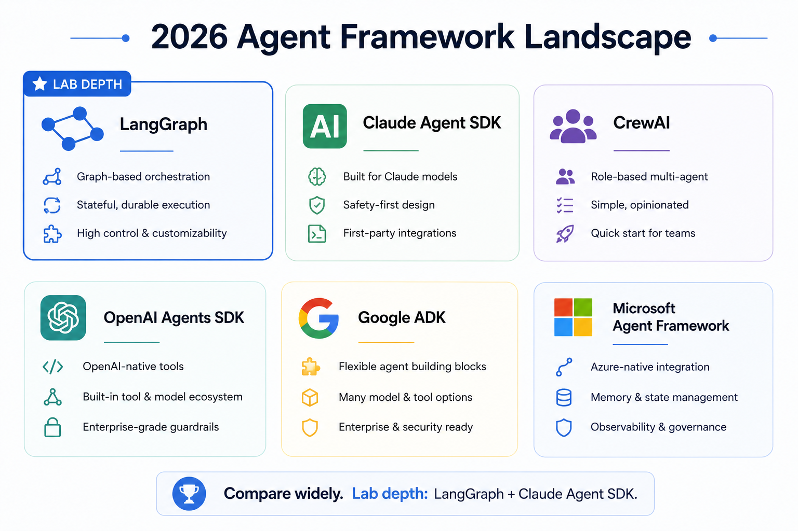
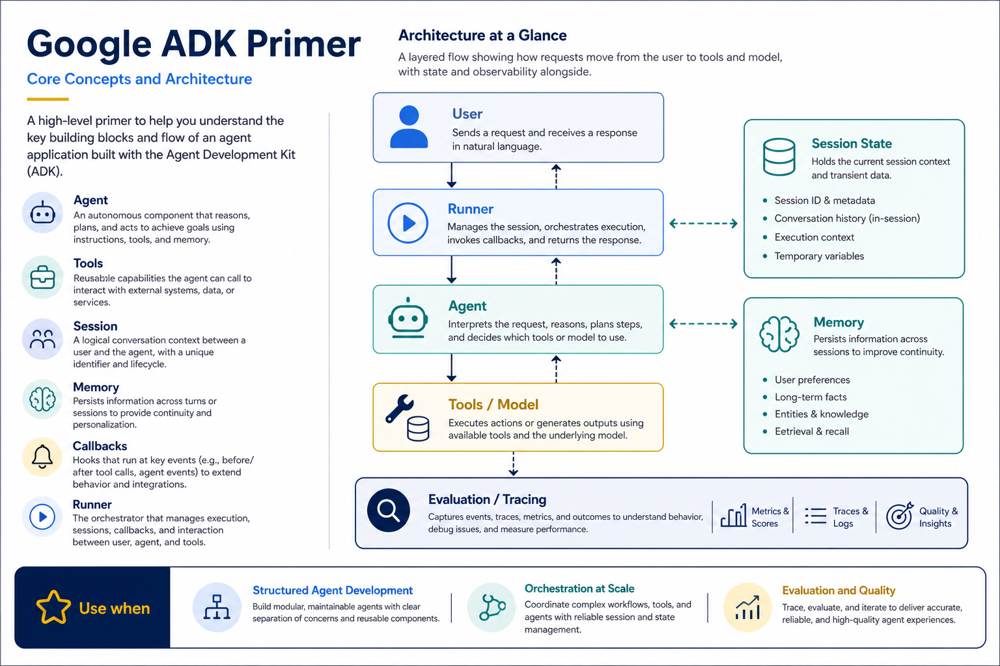
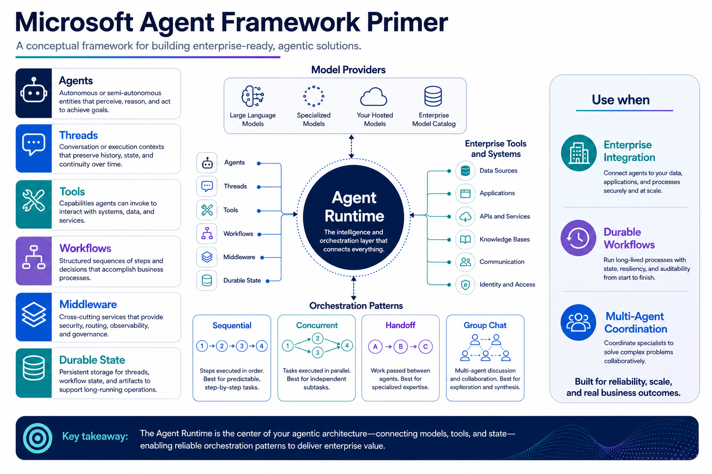
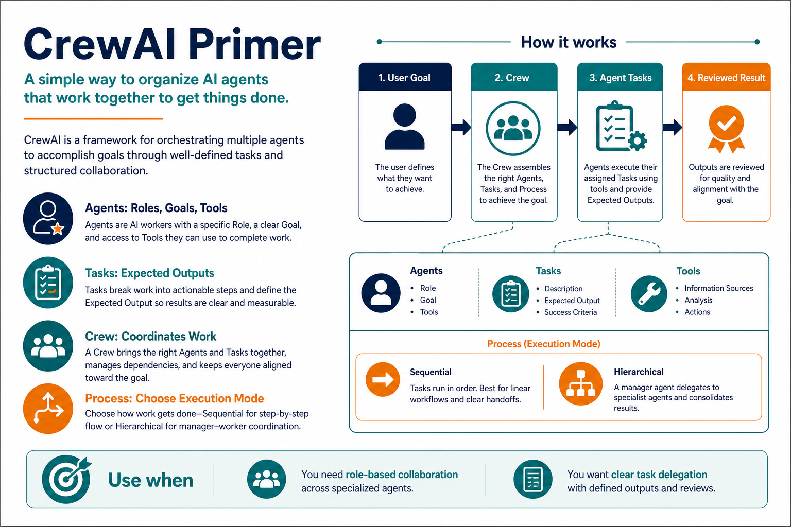
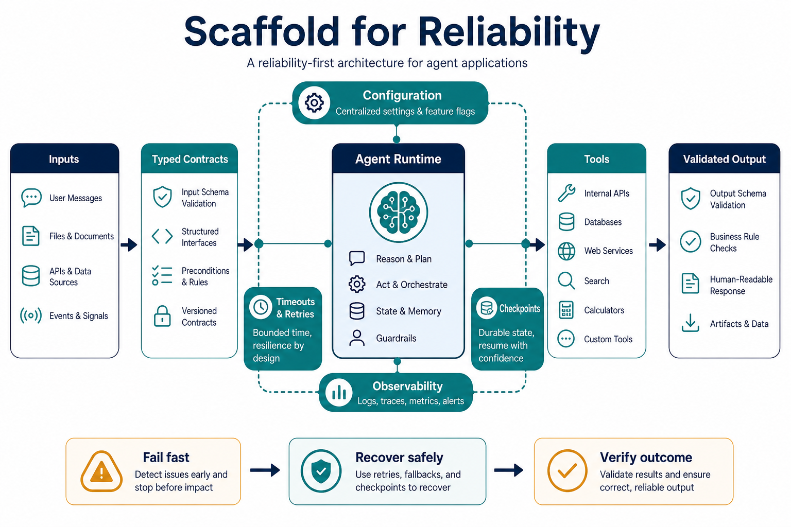
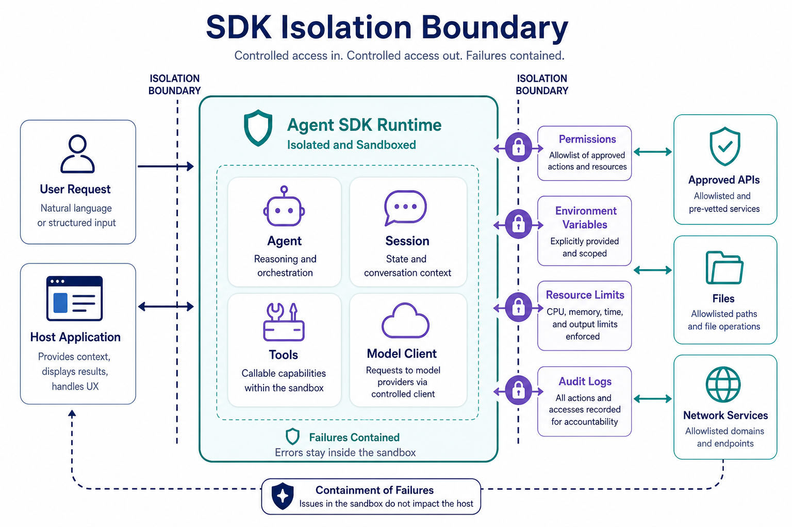
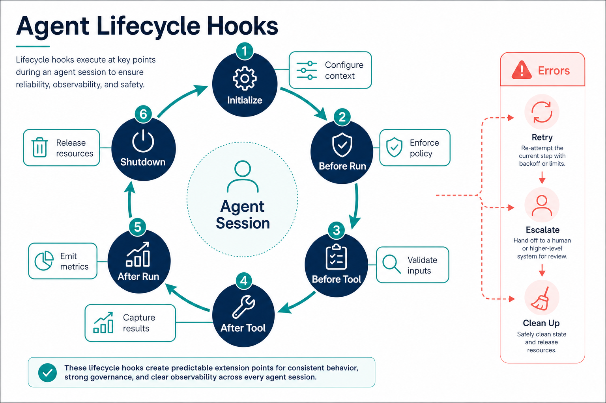
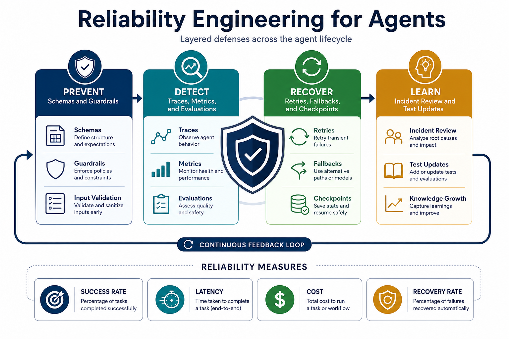
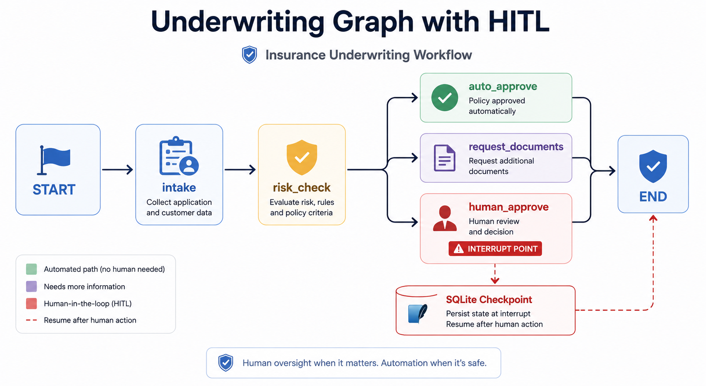

Setup (11:00–11:10)
conda activate ai_agent_env
claude auth status
python -c "import langgraph, crewai, tenacity; print('core Day 2 libs OK')"
python -c "from langgraph.checkpoint.sqlite import SqliteSaver; print('sqlite checkpointer OK')"Library setup If langgraph.checkpoint.sqlite fails to import
Checked against the confirmed ai_agent_env package list — langgraph-checkpoint 4.1.1 is present, but the SQLite-specific saver ships as a small separate package on some versions.
Fix
conda activate ai_agent_env
uv pip install langgraph-checkpoint-sqlite
python -c "from langgraph.checkpoint.sqlite import SqliteSaver; print('ok now')"This only needs to happen once per VM (Virtual Machine) — if it already imported cleanly above, skip this.
insurance-lookup, and logistics-lookup if you finished the homework) should still be registered in .mcp.json from yesterday. Confirm with: "What MCP tools do you have available?" in the Claude Code panel.
Topic 01 · The 2026 framework landscape
Concept. LangGraph models an agent as an explicit graph of states and transitions with durable checkpointing — it's in production at Klarna, Uber, LinkedIn, BlackRock, and JPMorgan. Claude Agent SDK (what Claude Code itself runs on) gives skills/subagents/hooks/permissions as first-class primitives. CrewAI organizes work as role-based crews of agents with defined tasks. OpenAI Agents SDK, Google ADK, and Microsoft Agent Framework are the other major 2026 options, each with their own take on the same core loop.
- What "framework" actually buys you. Every one of these still runs perceive/reason/act/observe underneath. The difference is how much of the state management, tool orchestration, and multi-agent coordination is handled for you vs. left for you to write — that's the real axis to evaluate on, not "which one is smartest."
- Why this matters for a hiring/build decision. LangGraph's explicit graph state is valuable when you need durable, resumable, auditable workflows (this week's HITL (Human-In-The-Loop) topic depends on exactly that). CrewAI's role-based framing is valuable when the task naturally decomposes into named specialist roles. Claude Agent SDK is valuable when the coding-agent-style isolation spectrum (skills → subagents → teams) fits your task shape.
- Ecosystem maturity is also a real input. Production references, community size, and documentation depth (LangGraph's named production users, for instance) reduce real delivery risk beyond the raw feature list.

GCP (Google Cloud Platform) setup Google ADK + Vertex AI (learner hands-on this cohort)
Current as of July 2026 — Google rebranded the Vertex AI console area to the Gemini Enterprise Agent Platform in April 2026 (Cloud Next '26); the underlying APIs (aiplatform.googleapis.com), ADC (Application Default Credentials) auth model, and google-adk package are unchanged, only the console navigation label moved. Claude models are now also available directly in Vertex/Gemini Enterprise Model Garden alongside Gemini — interesting context; AWS (Amazon Web Services) Bedrock (this afternoon's Topic 4) remains the one Claude-model call, so you can compare a Claude-native path against Vertex's Gemini path with hands-on experience on both.

What you do (every learner, in your own GCP sandbox)
- Open your assigned GCP sandbox, activate Cloud Shell.
gcloud auth list/gcloud config set project <assigned-project-id>— confirm your sandbox identity and project.- Confirm
aiplatform.googleapis.comis enabled:gcloud services list --enabled --filter="name:aiplatform.googleapis.com". - Export
GOOGLE_CLOUD_PROJECT,GOOGLE_CLOUD_LOCATION,GOOGLE_ADK_MODELdirectly in the shell (no file), run one bounded ADK agent call.
Full step-by-step (including troubleshooting 403/404/429 errors): VM-Clouds/_GCP_SANDBOX_SETUP.html.
Azure setup Microsoft Agent Framework + standalone Azure OpenAI (learner hands-on this cohort)
Current as of July 2026 — Microsoft has been consolidating the old "Azure AI Foundry" branding into Microsoft Foundry (portal at ai.azure.com); a standalone Azure OpenAI resource still supports plain API-key auth and can be viewed/managed from either the classic Azure portal or the Microsoft Foundry portal without needing a full Foundry project. When creating the resource, the portal may highlight a consolidated "Foundry" option ahead of "Azure OpenAI" in search — pick the plain Azure OpenAI entry for this exercise.

What you do (every learner, in your own Azure sandbox)
- In the Azure portal, create your own standalone Azure OpenAI S0 resource (Basics: your assigned subscription/resource group, an allowed region, S0 tier; Network: All networks; Tags: none). Verified live: this does not auto-deploy a model — you still need the next step.
- Deploy a model via Azure CLI (Command-Line Interface) (
az cognitiveservices account list-models, thenaccount deployment createwith--sku-name GlobalStandard— the classic portal's Deployments blade is unreliable/missing on some resources, so CLI is the documented path now). Pick aGenerallyAvailable, notDeprecating, model. - Read your resource's endpoint and API key off its Keys and Endpoint blade, and export them plus the deployment name (the one you chose in
--deployment-name, not anything from a Resource Group "Deployments" list — that's an unrelated ARM (Azure Resource Manager) history entry) directly in the shell (never a file). - Ask Claude Code to run
W2D2/snippets/azure_openai_verify.py— the script reads your three environment variables and makes one bounded chat-completions call; no Entra/CLI auth needed for this call itself (CLI was only needed to create the deployment).
Full step-by-step, including the verification code, expected result, and what it confirms: VM-Clouds/_AZURE_SANDBOX_SETUP.html.
Instructor drives live, variation A — comparison for our exact use case. Claude Code chat panel:
For our insurance ticket-resolution assistant specifically, compare
LangGraph, CrewAI, and using Claude Code's own subagents (Claude Agent
SDK) as the orchestration layer. For each, tell me: what would be easy,
what would be awkward, and which one you'd actually recommend for THIS
project and why.Instructor drives live, variation B — scaffold a CrewAI crew, structure only. VS Code terminal + Claude Code — this validates the crew's structure without calling any model (no API key needed — we're not calling .kickoff() yet):

Write a small Python script at W2D2/crew_scaffold.py using crewai
that defines two Agent roles (an "intake_specialist" and a
"policy_researcher") and one Task each for resolving an insurance claim
email, wired into a Crew. Do NOT call .kickoff() — just construct the
objects and print a summary confirming they were built correctly. Run it
and show me the output.Learners repeat. Add a third role ("compliance_reviewer") to your own copy of the scaffold, confirm it still constructs without error, and write one sentence on which of the three frameworks compared above you'd defend in the showcase.
Topic 02 · Scaffold effect on reliability
Concept. The same underlying model can swing by a huge margin on a benchmark like GAIA (General AI Assistants) purely based on the scaffold wrapped around it — planning discipline, evidence checks, retry logic. Architecture, not just the model, drives reliability.
- What "scaffold" concretely means here. The explicit rules you put around the model: does it have to cite evidence before answering? Does it retry once if uncertain? Is there a hard stop on tool-call count? Each of those is a scaffold decision, independent of which model you're using.
- Where this bites in practice. A weak scaffold on a genuinely hard case doesn't usually fail loudly — it fails by confidently giving a plausible-but-wrong answer, exactly like Day 1's ungrounded-claim failure mode.

Instructor drives live, variation A — weak scaffold. Claude Code chat panel — a genuinely tricky case, minimally scaffolded:
Quickly tell me: is claim CLM-748422 (row CLN-002, commercial_property)
fully covered? Just give me a yes/no and move on, don't overthink it.Instructor drives live, variation B — strong scaffold, same case.
Is claim CLM-748422 (row CLN-002, commercial_property) fully covered?
Before answering: (1) look up the claim and policy, (2) find the specific
policy document section that addresses this loss type, (3) if you're not
fully certain, say so explicitly rather than guessing, (4) cite the exact
document and section in your answer.Learners repeat. Write your own 3-rule "scaffold checklist" (e.g. "always cite a source," "always state confidence," "never answer a product with no grounding doc without flagging it") and test it against two different claims. Note whether your checklist caught anything the weak-scaffold style would have missed.
Topic 03 · Claude Agent SDK isolation spectrum
Concept. Three levels of isolation, increasing in overhead: skills run in-context, in the same session and memory. Subagents run with an isolated context and a one-way handoff — they do their job and report back a result, without polluting your main conversation's context. Agent teams (separate processes, experimental) go further still. A common production pattern is an orchestrator on a deeper-reasoning model coordinating workers on a faster one.
- Why isolation is worth the overhead. A subagent doing a long, detail-heavy investigation (e.g. combing through many policy documents) would otherwise flood your main session's context with intermediate noise — subagent isolation means only the distilled result comes back, protecting your main context exactly the way Day 1's memory topic warned about.
- The one-way part matters. A subagent typically can't ask your main session follow-up questions mid-task the way a peer could — it's dispatched, it works, it reports back. Design its brief accordingly: give it everything it needs up front.
- Agent teams are the experimental edge. Separate processes coordinating is powerful but adds real failure modes (partial process crashes, coordination overhead) — treat this as a concept to know exists, not something to reach for by default.

Instructor drives live, variation A — an in-context "skill". Claude Code chat panel — keep this fully in the main session's context:
Right here, in this conversation, summarize POL-HOME-010_water.md and
POL-HOME-010_flood_rider.md into one short paragraph I can quote to a
customer.Instructor drives live, variation B — dispatch a real subagent. Have Claude Code define and use an actual isolated subagent:
Define a subagent named "policy-research-specialist" whose only job is to
read every file under data/insurance/policies/ and data/logistics/policies/
and answer one specific question, returning just a short, cited summary —
not the full documents. Then dispatch it with this question: "which
policy documents mention a specific reporting deadline in days, and what
is that deadline for each?" Show me what it reports back.Learners repeat — test the isolation directly. Dispatch a second subagent task, but this time ask the subagent something that depends on your main session's earlier conversation (something only the main session would know, not written to any file):
Dispatch the policy-research-specialist subagent again, and ask it: "what
was the first claim_id we discussed together in this conversation, from
memory only, without reading any file?" Report exactly what it says.Topic 04 · Lifecycle hooks
Concept. Claude Code exposes real lifecycle hooks — PreToolUse, PostToolUse, Stop, SubagentStop, SessionStart/End, UserPromptSubmit — each a point where your own code runs deterministically, not the model's discretion. This is the same category of control point as Day 1's guardrails, just implemented as a first-class SDK feature rather than a prompt instruction.
- Pre vs. post. A
PreToolUsehook can inspect (and even block) a call before it happens — useful for enforcing "never call this tool with these arguments." APostToolUsehook runs after, useful for logging, redaction, or validating the result shape. - Hooks are code, not prompts. A hook is a script your settings point to — it runs every time, with no dependence on the model remembering to follow an instruction.

Configure it together, variation A — PreToolUse logging. Repo root, VS Code — have Claude Code add a hook that logs every tool call before it runs:
Add a PreToolUse hook in .claude/settings.json that appends a one-line
JSON log entry (timestamp, tool name, arguments) to outputs/tool_call_log
.jsonl every time any tool is about to be called. Show me the hook
config and the small script it runs.Trigger a couple of tool calls (e.g. re-run a lookup from earlier), then check the log file was written.
Configure it together, variation B — PostToolUse redaction, for contrast.
Now add a PostToolUse hook specifically for the get_claim_and_policy tool
that redacts the named_insured field to just "[REDACTED]" in what gets
logged to outputs/tool_call_log.jsonl, without changing what you actually
see and use in your answer.PreToolUse ran before the call existed — it's about deciding whether/how a call happens. PostToolUse ran after, with the real result in hand — it's about what you do with what came back. Notice both are deterministic code, not something you had to ask the model to remember to do.
Learners repeat. Add one more hook yourself: a SessionStart hook that prints a short reminder ("remember: commercial_package has no policy grounding") every time a new session begins. Start a fresh session and confirm it fires exactly once.
Topic 05 · Reliability engineering
Concept. Not every failure should be retried, and not every failure should be given up on immediately. Reliability engineering means classifying the fault first — transient (network blip, rate limit) gets a retry with exponential backoff; permanent (not found, invalid input) gets an immediate fallback or clear error, never a retry loop.
- Why retrying a permanent fault is actively harmful. Retrying a "record not found" error just delays the correct answer (there's nothing to find) while burning budget — this is the same budget guardrail from Day 1 Topic 06, applied specifically to fault handling.
- Backoff exists to avoid making things worse. Retrying instantly on a rate-limited or overloaded dependency just adds to the load that caused the problem — exponential backoff spaces retries out deliberately.

Build it together, variation A — transient fault, retried. VS Code terminal + Claude Code — no API key needed, this uses a local mock:
Write W2D2/reliability_demo.py using tenacity. Define a mock
function flaky_lookup(claim_id) that fails with a TimeoutError on its
first two calls and succeeds on the third. Wrap it with tenacity's retry,
exponential backoff, and a max of 3 attempts. Run it and show me the
timing between attempts in the log.Build it together, variation B — permanent fault, NOT retried, for contrast.
Add a second mock, permanent_not_found(claim_id), that always raises a
ValueError("claim not found") — this should NEVER be retried. Show me how
you'd modify the tenacity config (or add a fault-classification step
before it) so ValueError fails fast with a clear message, while
TimeoutError still retries.Learners repeat. Add a third path: when permanent_not_found fires, fall back to a secondary mock (e.g. checking a "recently closed claims" mock list) instead of just erroring out. Confirm the fallback triggers only for the permanent case, never the transient one.
Topic 06 · Human-in-the-loop
Concept. An approval gate is only meaningful if it's durable — the pause has to survive a process restart, not just be a confirmation dialog inside one running script. LangGraph's SQLite checkpointing is exactly this: a graph can pause at a human-approval node, get killed, and resume later from exactly where it stopped.
- Where this differs from Day 1's permission prompts. Claude Code's own permission approval (Day 1 PM Topic 05) pauses within one live session. A durably checkpointed graph can pause, have the entire process end, and still resume correctly hours later from disk — a stronger guarantee, needed for anything that might sit waiting for a human for a long time.
- Idempotency ties in directly. If "resume and execute" can ever be triggered twice (e.g. a double-click, a retried resume call), the executed action needs an idempotency key so it doesn't fire twice — the same concept from Day 1 Topic 03's write-tool design.

Build it together, variation A — checkpoint and pause. VS Code terminal + Claude Code — no API key needed, the graph nodes are plain Python:
Write W2D2/hitl_demo.py using langgraph with a SqliteSaver
checkpointer at W2D2/outputs/hitl_demo.sqlite. Build a 2-node graph:
node 1 "propose" prints a proposed action (e.g. "approve $500 payout for
CLM-424063") and sets a pending_approval flag; node 2 "execute" only runs
if pending_approval was cleared. Use an interrupt so the graph pauses
after "propose" until a human clears the flag. Run it and confirm it
pauses.Build it together, variation B — kill it, then resume from disk.
Now end this terminal session (or kill the Python process) entirely.
Then, in a new terminal, write a small resume script that reconnects to
the same SqliteSaver database and thread ID, clears the pending_approval
flag (simulating a human's approval), and resumes the graph so "execute"
runs. Confirm the state survived the restart.Learners repeat. Add an idempotency key to the "execute" node (e.g. skip execution if a already_executed flag is already set) and confirm calling resume a second time doesn't double-execute the payout.
Showcase (14:45–15:00)
Share one moment: a scaffold difference that changed the answer, a subagent isolation test result, a hook firing exactly where expected, or a HITL resume that genuinely proved durability.
Before W2D2 PM
Keep your crew_scaffold.py and hitl_demo.py handy — this afternoon's multi-agent and Bedrock topics build directly on both.